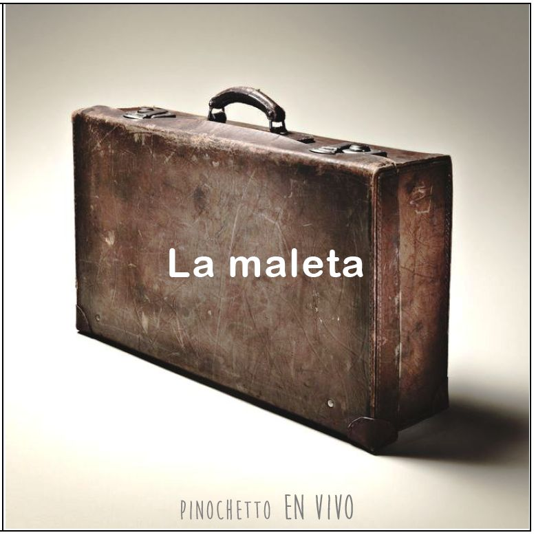

www.micancionero.ml

- Cosas que pasan (recitado por El Gaucho Mercié)
- La isla
- Herencia
- Buscando paz
- La maleta (cuento)
- La calandria (con Valentino Contard)
- Quiero ser tu sombra (con Valentino)
- Canción para cantar el día del amigo
- Detalles
- No debe haber
- Para cantar chamarrita (con El Gaucho Mercie)
- Chacarera de la noche (con El Gaucho Mercie)
- Pobre la gente pobre (con El Gaucho Mercie)
- Balderrama (con Juan Martínez)
© Pinochetto. Grabado en vivo en Auditorio “C. M. Scelzi”, el día de la tradición,
10 de noviembre de 2017. Concepción del Uruguay, Entre Ríos, Argentina. Reservados todos los
derechos de los autores y compositores.
No lo hagan en sus casas, cómprenlo hecho.